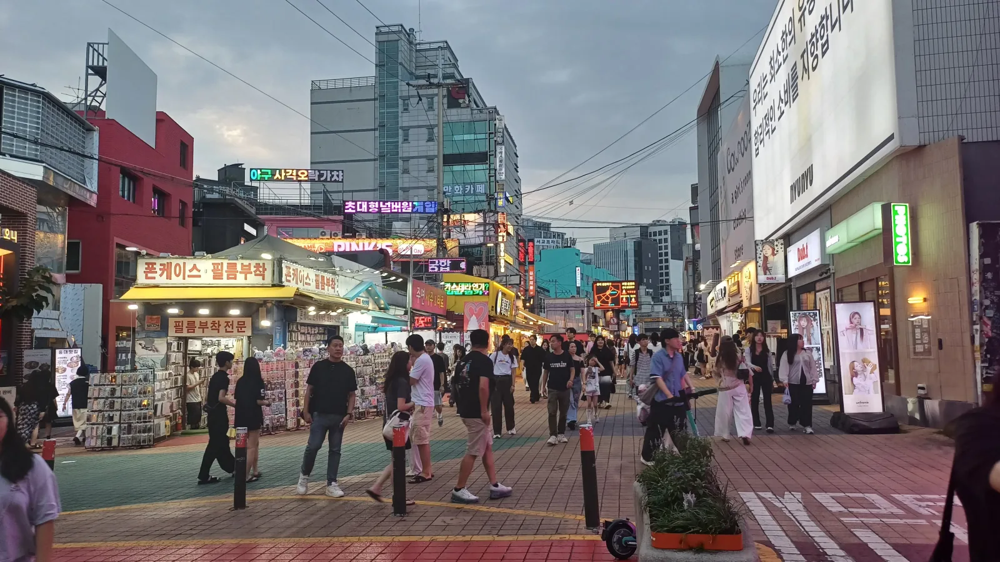
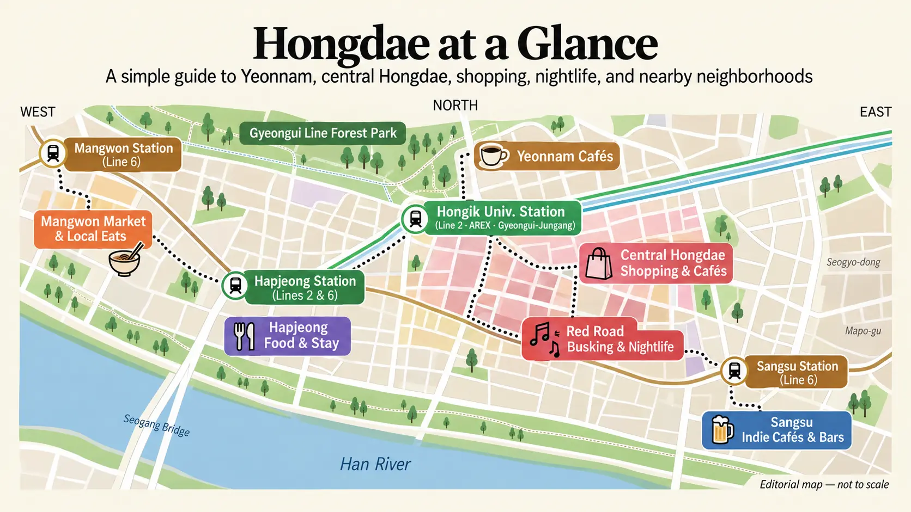
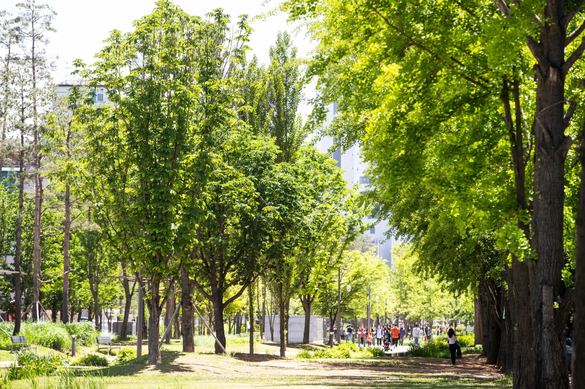
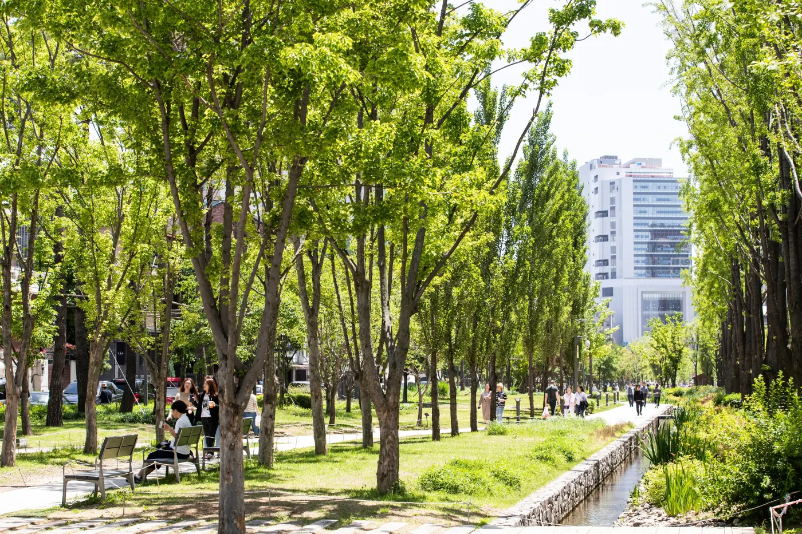
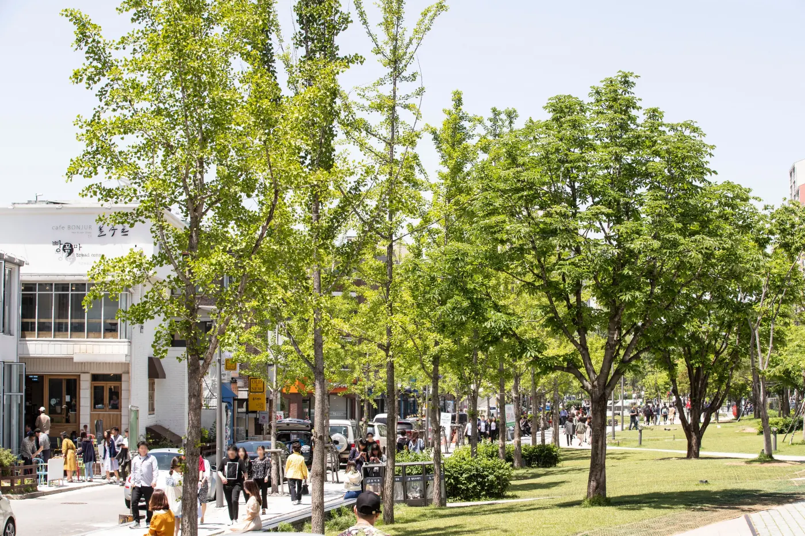
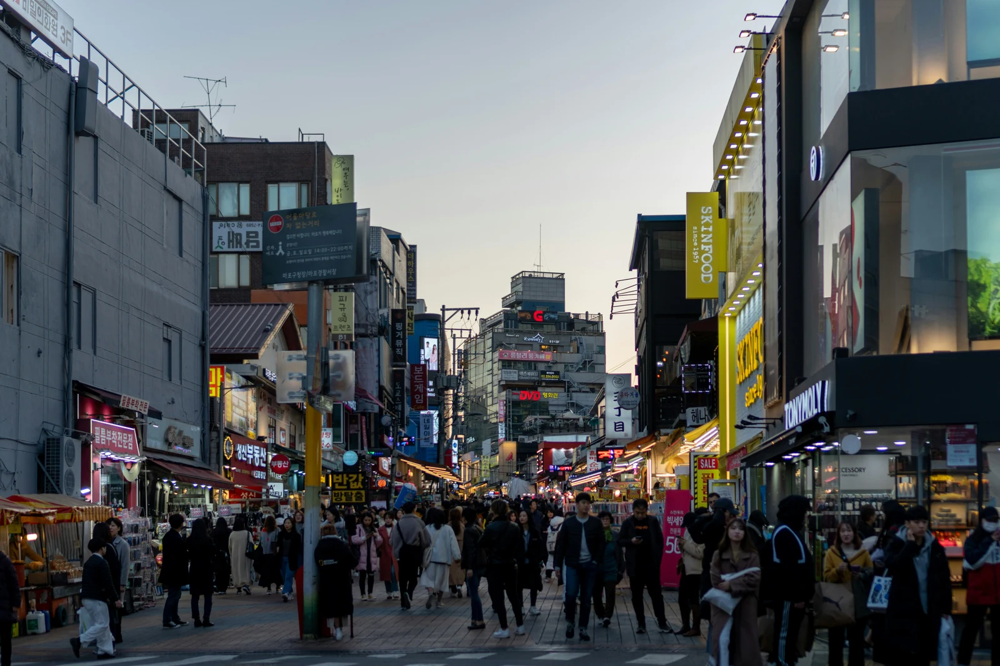
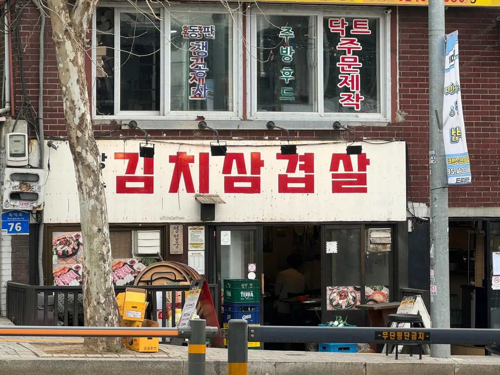
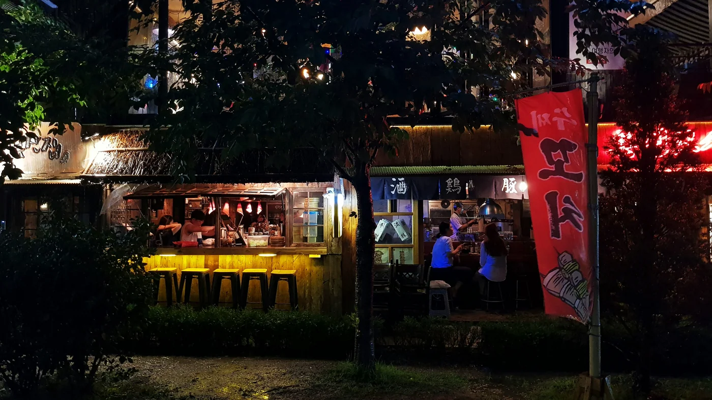
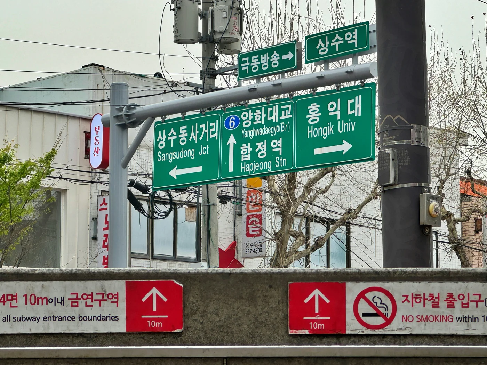

Hongdae Reiseführer 2026
Hongdae funktioniert am besten, wenn das Viertel als zusammenhängender Stadtteil und nicht als Checkliste geplant wird. Entweder in Yeonnam oder im belebteren Hongdae-Zentrum beginnen und den Tag dann um Shopping, Essen, Auftritte und die Art von Abend bauen, die tatsächlich gewünscht ist.

Warum Reisende Hongdae tatsächlich wählen
Hongdae lässt sich vor der Ankunft leicht falsch einschätzen.
Eine Version des Viertels besteht nur aus Clubs, Alkohol und Studenten. Eine andere reduziert es auf „das Seoul-Viertel mit direkter Flughafenbahn“. Beide Beschreibungen stimmen – und beide lassen den größten Teil dessen aus, warum Hongdae für Reisende funktioniert.
Hongdae wird nützlich, wenn mehrere kleinere Bedürfnisse gleichzeitig zusammenkommen.
Man kann am Nachmittag durch Yeonnam laufen, ohne große Vorplanung Kaffee trinken oder shoppen, später in die belebteren Straßen zum Abendessen wechseln und danach immer noch Optionen haben. Busking, Livemusik, Karaoke, Fotoautomaten, späte Cafés und Shopping sorgen dafür, dass das Viertel nicht plötzlich unbrauchbar wird, sobald das klassische Sightseeing des Tages vorbei ist.
Das ist besonders wichtig, wenn hier übernachtet wird.
Ein Palast oder Museum gibt meist einen Grund für einen einzelnen Besuch. Hongdae kann an mehreren Abenden etwas bieten, ohne dafür jedes Mal einen neuen Reiseplan zu brauchen. Vielleicht wird ein Nachmittag wirklich ausführlich hier verbracht, und an den nächsten zwei Abenden nutzt man Hongdae anders, nachdem man aus dem Zentrum zurückkommt.
Die Flughafenverbindung ist Teil des Reizes, sollte aber die Entscheidung nicht allein bestimmen. Wenn die meisten Morgen früh in Jongno, bei den Palästen oder im Zentrum beginnen und die Tage eher früh enden, verliert Hongdae einen Teil seines Vorteils. Dann kann ein Besuch für einen Nachmittag und Abend sinnvoller sein als eine Übernachtung hier.
Hongdae verdient den Aufenthalt dann, wenn die Stunden nach dem Abendessen tatsächlich genutzt werden.
Genau darin liegt der Unterschied.

Wo anfangen: Ausgang 3 oder Ausgang 9?
Ausgang 3 für den leichteren Einstieg
Für den ersten Besuch ist die Yeonnam-Seite rund um Ausgang 3 der Korea-Inside-Standard.
So liegt der Gyeongui Line Forest Park am Anfang der Route, statt direkt in die vollsten Geschäftsstraßen zu führen. Zuerst laufen, kleinere Straßen ansehen, bei Bedarf einen Kaffee trinken und später mit zunehmendem Nachmittag Richtung zentrales Hongdae wechseln.
Das funktioniert besonders gut für Paare, Alleinreisende, caféorientierte Besucher und alle, die noch nicht wissen, ob ihnen die lautere Seite Hongdaes wirklich liegt.
Hongdae wird damit nicht vermieden.
Es wird nur in einer besseren Reihenfolge angegangen.

Korea Tourism Organization / Lee Beom-su
Ausgang 9, wenn genau der belebte Teil der Grund für den Besuch ist
Wenn Red Road, Shopping, Character-Merchandise, K-Pop-Merchandise oder das zentrale Straßenleben Priorität haben, ist Ausgang 9 der direktere Start.
Der R1-Bereich Red Culture Market von Red Road beginnt ungefähr 220 Meter von Hongik University Station Ausgang 9 entfernt. Red Road selbst erstreckt sich über ungefähr 2 km durch verschiedene Themenabschnitte und sollte deshalb als Gebiet verstanden werden, durch das man sich bewegt – nicht als einzelner Sightseeing-Pin.
Das ist auch der bessere Start, wenn erst später am Tag angekommen wird und für Yeonnam vorher keine Zeit bleibt.
Die praktische Regel
Nachmittag mit Zeit zum Erkunden:
Ausgang 3 → Yeonnam → Gyeongui Line Forest Park → zentrales Hongdae → Abendessen → Red Road
Kurzer Besuch mit Schwerpunkt Shopping oder Abend:
Ausgang 9 → zentrales Hongdae / Red Road → Abendessen → Busking oder die tatsächlich geplante Abendaktivität
Auf der Karte ist der Unterschied klein.
Für jemanden, der das Viertel tatsächlich zu Fuß erlebt, verändert er den ganzen Tag.
Erst Yeonnam: Wie lange bleiben, bevor es ins zentrale Hongdae geht?
Hongik University Station Ausgang 3 → Gyeongui Line Forest Park → Yeonnam-Seitenstraßen → ein Café → zentrales Hongdae
Ausgang 3 führt zuerst in den ruhigeren Teil des Viertels.
Der Gyeongui Line Forest Park beginnt ungefähr 450 Meter von Ausgang 3 entfernt. Der gesamte Park verläuft über 6,3 km durch mehrere Teile Seouls, doch diese Zahl ist für einen Hongdae-Tag kaum hilfreich. Niemand muss den Park komplett ablaufen.
Für den ersten Besuch reicht der Abschnitt in Yeonnam.

Foto: Korea Tourism Organization / Lee Beom-su
Den Forest Park nicht zu einem langen Spaziergang machen
Der Park funktioniert am besten als Beginn des Nachmittags, nicht als Hauptattraktion.
Ein Stück laufen, beobachten, wie sich das Viertel darum öffnet, und den Hauptweg verlassen, sobald eine Seitenstraße interessanter wirkt. Cafés, Bäckereien, kleine Restaurants und Läden liegen jenseits des grünen Korridors. Wer zu lange ausschließlich im Park bleibt, verpasst am Ende Yeonnam selbst.
Für die meisten Erstbesucher reichen 20–30 Minuten tatsächlicher Parkspaziergang, bevor es in die Seitenstraßen geht.
Bei gutem Wetter und Freude an langsamem Laufen gern länger bleiben.
Bei Hitze, Regen oder wenn am Vormittag bereits viel zu Fuß besichtigt wurde, kürzen.
Das Ziel ist nicht Distanz.
Das Ziel ist, in Hongdae anzukommen, ohne den Nachmittag in den vollsten Straßen zu beginnen.
Das Café als echte Pause in der Route nutzen
Yeonnam hat genug Cafés, dass die Suche nach dem einen „besten“ mehr Aufwand machen kann, als der Kaffee wert ist.
Wenn kein bestimmtes Café selbst einer der Reisegründe ist, zuerst laufen und den Stopp erst wählen, nachdem man eine Weile im Viertel war.
Damit werden zwei Probleme gleichzeitig gelöst.
Yeonnam wird gesehen, bevor man sich hinsetzt, und das Café wird zu einer echten Pause vor dem belebteren Teil des Tages statt zu einem weiteren Umweg.
45–60 Minuten Cafézeit reichen auf einer ersten Hongdae-Route meistens aus.
Wenn Cafés selbst zu den wichtigsten Seoul-Interessen gehören, diese Regel ignorieren und Yeonnam mehr Zeit geben. Dann sind die Caféstraßen die Aktivität und nicht nur die Pause.

Foto: Korea Tourism Organization / Lee Beom-su
Für Yeonnam ungefähr zwei bis zweieinhalb Stunden einplanen
Für einen allgemeinen ersten Besuch ist folgende Arbeitsgröße sinnvoll:
Parkspaziergang + Seitenstraßen + ein Café = ungefähr 2 bis 2,5 Stunden
Das ist kein Reservierungsplan.
Es ist eine Leitplanke.
Ohne eine solche Grenze kann Yeonnam unbemerkt den ganzen Nachmittag füllen. Das kann genau richtig sein, lässt aber weniger Zeit für den Teil von Hongdae, der sich zum Abend am deutlichsten verändert.
Wer gegen 14 oder 15 Uhr beginnt, bewegt sich mit diesem Rhythmus am späten Nachmittag ganz natürlich in Richtung zentrales Hongdae.
Das ist ein besserer Übergang, als mittags in den vollsten Straßen anzukommen und darauf zu warten, dass Hongdae so wirkt wie in den Online-Videos.
Wissen, wann es weitergehen sollte
Kein Wahrzeichen zeigt an, dass Yeonnam „fertig“ ist.
Weitergehen, wenn eines von drei Dingen passiert: Die Cafépause ist vorbei, die Straßen beginnen sich zu wiederholen oder es ist Zeit für Shopping und Essen.
Zur Seite von Hongik University Station zurückgehen und Richtung zentrales Hongdae weiterlaufen.
Die Veränderung ist deutlich.
Die Straßen werden voller. Shopping tritt stärker in den Vordergrund. K-Pop- und Character-Merchandise, Fotoautomaten, Beauty-Läden und temporäre Pop-ups ziehen mehr Aufmerksamkeit an.
Genau dieser Tempowechsel ist der Grund, warum beide Gebiete zusammen besser funktionieren als getrennt.
Yeonnam gibt dem Nachmittag Raum.
Das Zentrum von Hongdae gibt ihm Schwung.
Ein realistischer Nachmittag
Als Orientierung – nicht als Fahrplan:
14:00–14:15 — Ausgang 3 und Orientierung
14:15–14:45 — Gyeongui Line Forest Park
14:45–15:30 — Yeonnam-Seitenstraßen
15:30–16:30 — Café- oder Bäckereipause
ca. 16:30–17:00 — langsam Richtung zentrales Hongdae wechseln
nach 17:00 — Shopping, Pop-ups und die belebtere Straßenatmosphäre
ab Abendessen — Red Road, Busking oder die Art von Abend, die tatsächlich gewünscht ist
Eine Stunde früher oder später spielt keine große Rolle.
Entscheidend ist die Reihenfolge.
Langsam beginnen. Später lebhafter werden.
Zentrales Hongdae: Nach Interesse shoppen, nicht nach Anzahl der Läden
Yeonnam → Shopping-Priorität wählen → ein Pop-up oder Fotoautomat, wenn es interessiert → Abendessen → Red Road
Wer aus Yeonnam kommt, erlebt das zentrale Hongdae oft wie eine plötzliche Lautstärkesteigerung.
Die Straßen sind voller, Schaufenster konkurrieren um Aufmerksamkeit, und es ist leicht, die nächsten zwei Stunden in Läden zu gehen, nur weil alle anderen es ebenfalls tun.
So sollte der Shopping-Block nicht beginnen.
Vorher entscheiden, wonach tatsächlich gesucht wird.
Zuerst K-Pop oder Mode wählen
Wenn K-Pop, Character-Merchandise oder Alben Priorität haben, einen Laden nahe der Station als Anker verwenden.
WITHMUU im AK Plaza führt aktuell offizielle Alben, Merchandise und Lightsticks und hat zusätzlich einen kleinen Erlebnisanteil. K-Pop Square Hongdae nahe Ausgang 1 funktioniert als spezialisierter K-Pop-Ort mit Merchandise, Ausstellungen und wechselnden Pop-ups.
Es ist nicht nötig, beide zu besuchen, nur weil beide existieren.
Wenn einer den Künstler, Charakter oder Event führt, der tatsächlich interessiert, dort beginnen. Wenn keiner passt, weitergehen.
Für Mode und Kosmetik Richtung R3-Bereich nahe Ausgang 9 wechseln. Dort liegt einer der dichteren Hongdae-Bereiche für Fashion- und Trendshopping.
Besser einen Shopping-Zeitblock als eine Laden-Checkliste festlegen.
Für Erstbesucher, die später noch Abendessen und Hongdae am Abend erleben möchten, sind ungefähr 60–90 Minuten ein sinnvoller erster Shopping-Block.
Wer hauptsächlich zum Shopping nach Seoul gekommen ist, bleibt länger.
Alle anderen sollten aufhören, bevor die Einkaufstaschen zum Reiseplan werden.
Pop-ups als temporär behandeln, nicht als garantierte Attraktionen
Hongdae-Pop-ups lohnen sich gerade deshalb zu prüfen, weil sie das Angebot für die konkreten Reisedaten verändern.
Sie gehören aber auch zu den schnellsten Wegen, wie ein alter Reiseführer falsch wird.
Ein K-Pop-, Character-, Fashion- oder Collaboration-Event, das vor mehreren Monaten gesehen wurde, kann längst vorbei sein. Ein anderes kann Vorabreservierung, Warteliste am selben Tag oder Zeitfenster verlangen. Ein K-Pop-Square-Event 2026 trennte zum Beispiel Zugang mit Vorabreservierung von späterem Vor-Ort-Warten.
Deshalb keinen Evergreen-Reiseplan um ein bestimmtes Pop-up bauen.
Stattdessen:
Kurz vor der Reise aktuelle Events prüfen. Nur eines ergänzen, wenn es ohnehin zu einem echten Interesse passt.
Wer Fan des Künstlers oder der IP ist, kann dafür eine Stunde umplanen.
Wer nicht interessiert ist, verbringt mit einer langen Schlange für limitiertes Merchandise wahrscheinlich nicht besser Zeit als mit Hongdae selbst.
Eine virale Warteschlange ist nicht automatisch eine Attraktion.
Fotoautomat dann nutzen, wenn er natürlich in den Weg passt
Vier-Foto-Automaten sind in Hongdae, Yeonnam, Sangsu und Hapjeong so verbreitet, dass für einen zufälligen Stand kein Umweg durch das Viertel nötig ist.
2026 gibt es im weiteren Hongdae-Gebiet zahlreiche Filialen von Life4Cuts, Photoism, Haru Film, Photogray und anderen Marken.
Praktische Regel:
Einen Stand sehen, der gefällt, Rahmen oder Hintergrund prüfen und hineingehen.
Wenn ein bestimmter K-Pop-Collaboration-Rahmen wichtig ist, zuerst nach teilnehmender Marke oder Filiale suchen. Sonst den Fotoautomaten als 10–20-minütige Pause in der Shopping-Route behandeln und nicht als eigenes Ziel, das einen U-Bahn-Plan verdient.
Für Freunde und Paare funktioniert das besonders gut, weil etwas Physisches von einem ansonsten sehr digitalen Tag bleibt.
Auch Alleinreisende müssen das nicht auslassen. Die Automaten werden selbst bedient; entscheidend ist nur, ob das Foto wirklich gewünscht ist.
Einkaufstaschen nicht den Abend kontrollieren lassen
Das wird schneller zum Problem, als viele erwarten.
Alben, Character-Merchandise, Kosmetik und Kleidung lassen sich einzeln leicht kaufen. Nach mehreren Läden trägt man das Ergebnis durch Abendessen, Busking und alles, was später geplant ist.
Wer in Hongdae übernachtet und das Hotel vernünftig nah liegt, kann die Einkäufe vor dem Abend ablegen – der Umweg kann sich lohnen.
Wer aus einem anderen Viertel besucht, sollte einen Stopp-Punkt definieren.
Nicht weiter shoppen, nur weil der nächste Laden vielleicht noch etwas Besseres hat, und dann feststellen, dass alle bereits müde von Hongdae sind, bevor der Teil des Tages beginnt, wegen dem man eigentlich hierherkam.
Shopping soll den Tag bereichern.
Es soll ihn nicht beenden.

Unsplash / patrick
Vor Beginn des Abends zum Abendessen wechseln
Wenn die Yeonnam-Route genutzt wurde und das zentrale Hongdae ungefähr um 17 Uhr erreicht wird, ist dieser Übergang realistisch:
17:00–18:15 — Mode, K-Pop, Character-Merchandise oder Beauty-Shopping
optional 15–30 Minuten — Pop-up oder Fotoautomat
ca. 18:30–20:00 — Abendessen
danach — Red Road, Busking, Livemusik, Karaoke, Bars oder spätes Café
Auch das ist kein Reservierungsplan.
Es ist ein Mittel, damit der Shopping-Teil den Abend nicht verschluckt.
Wenn unterwegs etwas Interessanteres auftaucht, den Plan ändern.
Genau diese Flexibilität ist einer der Gründe, Zeit in Hongdae zu verbringen.
Was rund um Hongdae essen? Die Mahlzeit an den Tagesablauf anpassen
Mangwon für kulinarische Erkundung → Cafépause in Yeonnam → Abendessen im zentralen Hongdae → spätes Essen flexibel entscheiden
Hongdae hat so viele Restaurants, dass die Entscheidung, wo gegessen werden soll, schnell zu einer weiteren Form von Reiseplan-Stress wird.
Nicht mit einer Liste berühmter Restaurants beginnen.
Zuerst die Art der Mahlzeit festlegen.
Mittagessen, Cafépause, Abendessen mit Freunden und spätes Essen nach einer Performance erfüllen unterschiedliche Zwecke. Sie müssen nicht auf dieselbe Weise geplant werden.
Mangwon nutzen, wenn das Mittagessen selbst Teil der Aktivität ist
Wenn mehrere koreanische Gerichte probiert werden sollen, statt sich für eine große Mahlzeit in ein Restaurant zu setzen, funktioniert Mangwon Market besser als Mittagstopp als als kurzer Umweg nach dem Abendessen.
Am sinnvollsten ist es, zu teilen.
Dakgangjeong, Kroketten, Tteokgalbi und kleinere Marktsnacks ermöglichen es Paaren oder Gruppen, mehrere Dinge zu probieren, ohne sich sofort auf ein einziges Restaurant festlegen zu müssen.
Nicht in den ersten fünf Minuten alles kaufen, was gut aussieht.
Mit ein oder zwei Dingen beginnen, weiter durch den Markt laufen und erst danach entscheiden, ob noch Hunger da ist.
Das klingt selbstverständlich – bis frittierter Snack, süßes Getränk und Chicken Cup zusammen bereits zum Mittagessen geworden sind.
Bei angenehmem Wetter kann Take-away-Essen auch weiter zum Mangwon Hangang Park mitgenommen werden.
Bei Regen, starker Hitze oder wenn die Gruppe bereits müde ist, den Markt selbst zum Ziel machen und den Fluss auslassen.
Mangwon funktioniert, weil das Essen selbst die Aktivität sein kann.
Es braucht keine Checkliste berühmter Marktstände.
Das Yeonnam-Café vom Mittagessen trennen
Wenn die frühere Yeonnam-Route genutzt wurde, ist das Café in erster Linie eine Pause.
So sollte es behandelt werden, sofern Cafés nicht selbst zu den Hauptgründen der Seoul-Reise gehören.
Ein schweres Mittagessen direkt gefolgt von einem großen Dessertcafé kann den ganzen Nachmittag verlangsamen, bevor zentrales Hongdae überhaupt erreicht wurde.
Kaffee, Gebäck oder ein Dessert zum Teilen reicht vielen Reisenden.
Später kann immer noch wieder gegessen werden.
Hongdae ist kein Viertel, in dem die nächste Essensoption schwer zu finden wäre.
Für Paare und Gruppen das Abendessen zum Anker machen
Das zentrale Hongdae ist ein guter Ort, um das Abendessen zu einem Teil des Abends zu machen statt zu etwas, das zwischen zwei Geschäfte gedrückt wird.
Für Paare oder Gruppen passen Korean BBQ und Dakgalbi besonders gut, weil geteilt wird und die Mahlzeit ganz natürlich Zeit beansprucht.
Fried Chicken passt, wenn es lockerer sein soll oder wenn der Abendplan wichtiger ist als das Essen selbst.
Die richtige Wahl hängt davon ab, was danach kommt.
Wenn Red Road, Busking oder Livemusik geplant sind, nicht quer durch Hongdae zu einem Restaurant fahren, nur weil es auf einer viralen Liste stand.
Dort essen, wo der Weg zum Teil von Hongdae kurz bleibt, der nach dem Abendessen genutzt werden soll.
Ein Restaurant kann ausgezeichnet und trotzdem das falsche Restaurant für den eigenen Reiseplan sein.

Foto: Unsplash / suzi-kim
Alleinreisende sollten vor dem Hinsetzen die Bestellregel prüfen
Hongdae hat mehr als genug Essen für Alleinreisende.
Die Schwierigkeit ist nicht, allein zu essen.
Schwieriger sind Gerichte, die manche Restaurants als Gemeinschaftsgerichte behandeln.
Bei Korean BBQ, Dakgalbi, Gopchang und ähnlichen Grill- oder Pfannengerichten kann es eine Mindestbestellmenge geben, selbst wenn die Speisekarte den Preis pro Portion zeigt. Manche Restaurants nehmen eine Einzelperson an, wenn die Mindestmenge bestellt wird; andere akzeptieren einen Tisch für eine Person gerade in Stoßzeiten möglicherweise nicht.
Vor dem Hinsetzen kurz prüfen.
Wenn das Restaurant für eine Person nicht passt, weitergehen statt daraus eine gescheiterte kulinarische Mission zu machen.
Einzelportionen sind deutlich einfacher.
Suppen, Eintöpfe, Nudeln, Reisgerichte, Kimbap und andere Gerichte in einer Schüssel oder auf einem Tablett passen natürlicher zu einem Tag allein.
Wenn Korean BBQ selbst wichtig ist, gezielt nach einem Restaurant suchen, das Alleinreisende akzeptiert, statt davon auszugehen, dass jedes BBQ-Restaurant in Hongdae das tut.
Ziel ist gutes Essen.
Nicht eine Diskussion über die Mindestbestellung zu gewinnen.
Nicht das gesamte Seoul-Essensbudget in Hongdae ausgeben
Hongdae ist praktisch, aber Bequemlichkeit ist kein Grund, jede Seoul-Mahlzeit hier einzunehmen.
Wer im Viertel übernachtet, sollte genau diese Bequemlichkeit für Frühstück, ein ungeplantes Abendessen oder spätes Essen nach der Rückkehr aus einem anderen Stadtteil nutzen.
Andere Mahlzeiten können dort stattfinden, wo der Tag ohnehin verbracht wird.
Ein Palast- und Jongno-Tag kann Essen in Jongno enthalten.
Ein Abend in Euljiro kann in Euljiro bleiben.
Ein Mangwon-Tag sollte Mangwon nutzen.
Quer durch Seoul nach Hongdae zurückzufahren, nur weil alle gespeicherten Restaurants nahe dem Hotel liegen, verschenkt einen Vorteil eines stadtweiten Reiseplans.
Das Hotelviertel soll Mahlzeiten erleichtern.
Es soll nicht jede Mahlzeit bestimmen.
Spätes Essen erst später entscheiden
Dieser Teil des Tages braucht kaum Planung.
Wenn das Abendessen wegen Kurs, Aufführung oder anderer Aktivität früh war, später entscheiden, ob überhaupt noch Hunger besteht.
Fried Chicken, Nudeln, eine einfache späte Mahlzeit, Dessert, Convenience-Store-Essen oder gar nichts können funktionieren.
Nicht um 22:30 Uhr noch ein zweites berühmtes Restaurant fest einplanen, nur weil Hongdae spät lebendig bleibt.
Vielleicht besteht Hunger.
Vielleicht sind alle aber auch müde und tragen drei Einkaufstaschen.
Diese Entscheidung offenlassen.
Ein praktischer Essensrhythmus für einen Hongdae-Tag
Wenn Hongdae selbst der Hauptplan für Nachmittag und Abend ist:
Leichtes Mittagessen oder Mittagessen anderswo → Yeonnam-Café
am Nachmittag → Abendessen im zentralen Hongdae beim
Übergang in den Abend → Red Road / Livemusik / Karaoke /
Bars → spätes Essen nur, wenn es dann noch gewünscht wird
Für einen vollen Hongdae + Mangwon-Tag die erste Hälfte ändern:
Mangwon Market zum Mittagessen → Mangwon
/ bei gutem Wetter Fluss → Hapjeong oder
Sangsu → zentrales Hongdae → späteres
Abendessen oder leichtere Abendmahlzeit
Nicht beide Routen in denselben Tag zwingen,
nur weil alles im Westen Seouls liegt.
Ein sinnvoller Essensplan sorgt dafür,
dass zur richtigen Zeit Hunger besteht.
Bezahlte Erlebnisse in Hongdae: nur buchen, wenn sie den Tag wirklich verändern
K-Pop-Tanz / Parfüm / Ringherstellung / andere Workshops → ein echtes Interesse wählen → Zeit reservieren → restlichen Hongdae-Tag darum bauen
Hongdae hat so viele buchbare Aktivitäten, dass aus einem flexiblen Vierteltag schnell eine Reihe fester Termine wird.
Genau das vermeiden.
Ein bezahltes Erlebnis verdient seinen Platz, wenn es etwas bietet, das beim normalen Laufen, Shoppen oder Essen in Hongdae nicht entsteht.
Für die meisten Erstbesucher reicht eine gebuchte Aktivität.
K-Pop-Tanz lohnt sich, wenn selbst mitgemacht werden soll
Wenn K-Pop einer der Gründe für die Seoul-Reise ist, hat ein Tanzkurs einen klareren Zweck als eine weitere Stunde Merchandise-Shopping.
Aktuelle Hongdae-Kurse umfassen englisch geführte Angebote von ungefähr 90 Minuten, sowohl als Kleingruppe als auch privat. Manche werden ausdrücklich als anfängerfreundlich angeboten; Tanzerfahrung ist also nicht automatisch nötig.
Die eigentliche Frage lautet: Soll die Choreografie selbst gelernt werden?
Wenn ja, wird der Kurs zum Fixpunkt des Nachmittags.
Nicht drei Stunden shoppen und dann erschöpft bei der bezahlten Aktivität ankommen.
Ein einfaches Muster funktioniert besser:
Yeonnam oder Mittagessen → Tanzkurs → kurze Pause → zentrales Hongdae-Shopping → Abendessen → Abend
Wenn der Kurs später liegt, Shopping und Kursblöcke umdrehen.
Eine feste Reservierung sollte den flexiblen Teil des Tages bestimmen, nicht umgekehrt.
Gruppe oder privat aus einem Grund wählen
Ein offener Gruppenkurs ist sinnvoll, wenn die Aktivität gewünscht ist, ohne für eine vollständig personalisierte Session zu bezahlen.
Auch Alleinreisende können gut teilnehmen, weil keine eigene Gruppe mitgebracht werden muss.
Private Kurse werden nützlicher, wenn ein bestimmter Song wichtig ist, wenn Freunde gemeinsam lernen möchten oder unterschiedliche Selbstsicherheit einen Gruppenkurs unangenehm machen würde.
Aktuelle Produkte zeigen, dass private Optionen teilweise eine Songauswahl erlauben, während offene Kurse die geplante Choreografie verwenden.
Nicht extra für „privat“ zahlen, nur weil das Wort hochwertiger klingt.
Dafür zahlen, wenn die Personalisierung das Erlebnis wirklich verändert.
Parfümherstellung passt zu einer ruhigeren Stunde in Innenräumen
Nicht jede Hongdae-Aktivität braucht Musik oder Menschenmengen.
Aktuelle Parfüm-Workshops reichen von geführtem Mischen bis zu selbstständigeren Formaten und dauern im Allgemeinen ungefähr eine Stunde bis 90 Minuten. Mehrere aktuelle Angebote haben englische Unterstützung.
Das passt besonders gut für:
Paare, die etwas Ruhigeres möchten
Alleinreisende, die eine strukturierte Aktivität in Innenräumen bevorzugen
einen Regentag, an dem langes Laufen und Busking weniger attraktiv sind
Der Grund zur Buchung ist nicht, dass Parfümherstellung ein „Must-do-Korea-Erlebnis“ wäre.
Der Grund ist, dass während der Reise etwas hergestellt werden soll, das später mit nach Hause kommt.
Wenn Düfte nicht interessieren: auslassen.
Ringherstellung braucht mehr Zeit, als die Buchungsseite vermuten lässt
Ein Ring-Workshop klingt nach einem kleinen Zusatz.
Meist ist er das nicht.
Aktuelle Silberring-Erlebnisse in Hongdae können ungefähr zwei Stunden dauern – einschließlich Designauswahl, Größenanpassung, Formen, Finish und optionaler Gravur oder Steinarbeit.
Damit ist der Workshop eher eine größere Nachmittagsaktivität als eine kurze Shopping-Pause.
Natürlich passt er zu Paaren, Freunden oder Reisenden, die gezielt ein handgemachtes Souvenir möchten.
In einen bereits vollgepackten halben Tag passt er schlecht.
Wer zwei Stunden Workshop bucht, muss etwas anderes streichen.
Nicht einfach zusätzlich draufsetzen.
Vor der Zahlung fünf Dinge prüfen
Dauer Eine 90-minütige Aktivität kann mit Ankunft,
Check-in und nächstem Weg näher an zwei Stunden des Tages beanspruchen.
Sprache Nicht annehmen, dass jede Seoul-Aktivität automatisch auf Englisch stattfindet.
Aktuelle Hongdae-Produkte reichen von englisch geführten
Sessions bis zu mehrsprachig video-geführten Formaten.
Gruppe oder privat Klar wissen,
ob an einer Gruppe teilgenommen oder die Session nur für die eigene Gruppe reserviert wird.
Alter und Teilnahmebedingungen Manche aktuelle Tanzprodukte akzeptieren zum Beispiel Kinder ab 7 Jahren.
Das gilt aber für das konkrete Produkt und darf nicht auf jeden Kurs verallgemeinert werden.
Stornierung und Ankunftsbedingungen Wenn die Aktivität mitten in einem vollen Seoul-Tag liegt,
können diese Bedingungen wichtiger sein als ein kleiner Preisunterschied.
Vorher lesen, bevor der Reiseplan um die Reservierung herum gebaut wird.
Nicht buchen, nur damit der Reiseplan voller aussieht
Hongdae bietet auch ohne Ticket genug.
Yeonnam laufen, im zentralen Hongdae stöbern, essen, ein Pop-up prüfen, Busking ansehen oder in einem Café sitzen kann problemlos einen Nachmittag und Abend füllen.
Eine bezahlte Aktivität soll einen Teil dieser Zeit ersetzen.
Sie darf nicht einfach oben drauf gesetzt werden.
Wenn keiner der aktuellen Kurse oder Workshops wirklich interessiert, nichts ausgeben und den Tag flexibel lassen.
Wo eine gebuchte Aktivität in den Tag passt
Option A — K-Pop-fokussiert
Yeonnam → K-Pop-Tanzkurs → zentrales Hongdae-Shopping → Abendessen → Red Road / Abend
Option B — Paar
/
Craft
Yeonnam → Café → Ring- oder Parfüm-Workshop
→ Abendessen
→ Busking /
Livemusik
/
spätes Café
Option C — Regentag
Shopping in Innenräumen
→ Workshop oder Tanzkurs
→ Abendessen
→ Karaoke / Café
Die Version wählen, die den Tag auf eine Weise verändert, die tatsächlich wichtig ist.
Dann genau eine Aktivität buchen.
Hongdae nach dem Abendessen: Wie weit soll die Nacht gehen?
Abendessen → Red Road prüfen → Straßenauftritt, Livemusik, Karaoke oder Bar wählen → nur weiterziehen, wenn es wirklich noch gewünscht ist
Hongdae wird nach dem Abendessen nicht plötzlich zu einem reinen Clubviertel.
Was sich verändert, ist die Zahl der Möglichkeiten.
Draußen eine Performance ansehen, noch einen Kaffee trinken, Livemusik hören, Karaoke singen, in eine Bar gehen oder wesentlich länger bleiben – alles ist möglich. Nichts davon ist Pflicht, damit der Abend als „echte Hongdae-Nacht“ gilt.
Deshalb lautet die nützliche Frage nach dem Abendessen nicht:
„Wo ist das Nachtleben?“ Sondern:
„Wie viel Nacht möchte ich tatsächlich noch?“
Hongdae nach Einbruch der Dunkelheit

/ daesun-kim
Draußen beginnen, bevor man sich für einen Ort entscheidet
Bei brauchbarem Wetter zuerst mit Red Road beginnen.
So bleibt der erste Teil des Abends flexibel.
Der R2-Bereich ist eine etablierte Busking-Straße und keine einzelne Bühne. Registrierte Auftritte können Musik, Tanz, Zauberei und Pantomime umfassen.
Es braucht kein Ticket und auch keine vorab festgelegte Vorstellung davon, was gesehen werden soll.
Erst laufen.
Wenn etwas interessiert, stehen bleiben.
Wenn nicht, weitergehen.
Das ist eine der einfachsten Arten, Hongdae am Abend zu erleben, ohne den restlichen Abend sofort an Nachtleben zu binden.
Busking als aktuelle Information behandeln, nicht als feste Uhrzeit
Einen Seoul-Reiseplan nicht auf Sätze wie diesen bauen: „Hongdae-Busking beginnt jeden Abend um 20 Uhr.“
Red Road veröffentlicht datierte Zeitpläne; einzelne Zonen und auftretende Gruppen wechseln.
Wetter und Betriebsbedingungen können das Programm ebenfalls verändern.
Praktische Regel:
Kurz vor dem Besuch den offiziellen Red-Road-Zeitplan prüfen.
Wenn eine Band oder Performance tatsächlich interessiert, das Abendessen darum herum legen.
Wenn nicht, nicht eine Stunde warten, nur weil ein Reiseführer behauptet, Busking müsse erlebt werden.
Die Straße bleibt trotzdem da.
Der Abend kann woanders weitergehen.
Livemusik wählen, wenn die Performance selbst wichtig ist
Livemusik ist eine andere Entscheidung als Busking.
Busking funktioniert, weil man es beim Laufen entdecken kann.
Ein Veranstaltungsort für Livemusik verlangt mehr Planung, weil Ticket, Startzeit und ein Künstler eine Rolle spielen können.
KT&G Sangsangmadang Hongdae betreibt zum Beispiel einen eigenen Konzertsaal und veranstaltet auch 2026 Konzerte und Musikprogramme.
Das macht den Ort nicht automatisch zum Pflichtstopp.
Aktuelles Programm prüfen.
Wenn Künstler oder Musikstil interessieren, den Abend um die Show bauen.
Wenn nicht, nicht nur hineingehen, um sagen zu können, Hongdaes Indie-Szene erlebt zu haben.
Die Musik sollte der Grund sein.
Karaoke ist die einfachste Verlängerung des Abends, ohne ihn zum Nachtlebenprogramm zu machen
Für Freunde, Paare und manche Familien kann Karaoke nach dem Abendessen die einfachste Antwort sein.
Man muss weder die lokale Musikszene kennen noch den richtigen Club finden oder bis sehr spät draußen bleiben.
Die Gruppe entscheidet selbst, wie lange sie bleibt, was gesungen wird und wann genug ist.
Diese Flexibilität zählt nach einem langen Seoul-Tag.
Wenn alle um 22 Uhr müde sind: zurück ins Hotel.
Wenn plötzlich noch Energie da ist: Karaoke verlängert den Abend um eine Stunde, ohne einen zweiten Reiseplan zu erzeugen.
Besonders nützlich ist das für Reisende, die Hongdae lebendig erleben wollen, aber kein Interesse an Alkohol oder Clubs haben.
Hongdae am Abend funktioniert auch ohne Alkohol
Das wird in kurzen Hongdae-Guides oft falsch dargestellt.
Nachtleben ist nicht dasselbe wie Alkohol.
Ein Abend kann so aussehen:
Abendessen → Red Road → Fotoautomat → Dessert oder Café → Hotel
oder:
Abendessen → Busking → Livemusik → Hotel
oder:
Abendessen → Karaoke → spätes Essen → Hotel
Eine Familie mit Teenagern, ein Paar ohne Alkoholinteresse oder eine alleinreisende Person, die keinen Club möchte, kann trotzdem genau den Teil von Hongdae nutzen, der nach dem Abendessen besonders interessant wird.
Das Viertel verlangt nicht, an jeder seiner Varianten teilzunehmen.
Clubs und Pub Crawls lösen ein engeres Problem
Wenn Clubs wirklich Teil der Reise sind, dafür planen.
Sie sollten aber nicht zur Standardempfehlung werden, nur weil das Viertel Hongdae heißt.
Ein geführter Pub Crawl kann für Alleinreisende sinnvoll sein, die gezielt einen sozialen Abend möchten und lieber einer Gruppe beitreten als allein Bars und Clubs auszuwählen.
Deutlich weniger sinnvoll ist das für:
Menschen, die keinen Alkohol trinken
Reisende, die organisierte Gruppenabende nicht mögen
Familien
alle, deren idealer Abend mit Musik, Essen oder Café endet
In Hongdae zu übernachten verändert diese Entscheidung
Das ist eines der wichtigsten Argumente dafür, im Viertel zu schlafen.
Liegt das Hotel in der Nähe, muss um 19 Uhr noch nicht entschieden werden, wie spät die Nacht endet.
Abendessen, einen Teil einer Performance ansehen und danach entscheiden, ob noch eine Stunde gewünscht ist.
Wer nach Myeongdong, Jongno oder in einen anderen Teil Seouls zurückfahren muss, hat eine andere Rechnung.
Irgendwann wird der Rückweg selbst zum Teil des Abends.
Das macht einen Besuch in Hongdae von einem anderen Viertel aus nicht schwierig.
Es bedeutet nur, dass klar sein sollte, wann die Rückfahrt beginnen soll, statt zu erwarten, die Nacht werde sich von allein organisieren.
Ein realistischer erster Hongdae-Abend
Für jemanden,
der den Nachmittag bereits in Yeonnam
und im zentralen Hongdae verbracht hat:
ca. 18:30–20:00 — Abendessen
danach — durch Red Road laufen und prüfen, was tatsächlich stattfindet
Dann eine Option wählen:
Straßenperformance Draußen bleiben und den Abend flexibel halten.
Livemusik Nur dann,
wenn eine konkrete Performance die Zeit oder das Ticket wert ist.
Karaoke Wenn die Gruppe noch eine Aktivität möchte, aber keinen Club.
Bar oder Club Weil genau dieser Abend gewünscht
ist – nicht weil Hongdae angeblich danach verlangt.
Und wenn das Abendessen gereicht hat?
Zurück ins Hotel.
Hongdae wurde trotzdem erlebt.
Mangwon, Hapjeong und Sangsu: Ergänzen, wenn ein anderer Hongdae-Tag gewünscht ist
Mangwon Market → Mangridan-gil → Mangwon Hangang Park bei gutem Wetter → Hapjeong oder Sangsu → zentrales Hongdae am Abend
Mangwon, Hapjeong und Sangsu passen natürlich in einen weiteren Hongdae-Tag.
Das bedeutet nicht, dass jeder Hongdae-Besucher sie ergänzen sollte.
Wer nur drei oder vier Stunden hat, bleibt bei Yeonnam und zentralem Hongdae. Mit Mangwon wird aus einem kompakten Viertelbesuch eine größere West-Seoul-Route.
Nur dann ergänzen, wenn genug Zeit da ist, damit sich der Charakter des Tages tatsächlich verändern darf.
Mangwon nicht in einen kurzen Hongdae-Besuch pressen
Mangwon ist keine kleine Attraktion direkt neben Red Road.
Sobald Markt, umliegende Straßen und vielleicht der Fluss hinzukommen, entsteht ein eigener großer Tagesblock.
Das funktioniert gut an einem vollen Tag.
Schlecht funktioniert es, wenn bereits K-Pop-Kurs, mehrere Stunden Shopping und ein Abendplan in Hongdae feststehen.
Wenn der Reiseplan schon voll ist, Mangwon für einen anderen Besuch aufheben.
Dass zwei Viertel auf derselben Karte zusammenpassen, heißt nicht, dass sie in denselben Nachmittag passen.
Am Mangwon Market beginnen, wenn Mittagessen Teil des Erlebnisses ist
Mangwon Market funktioniert am besten, wenn mit genug Hunger angekommen wird.
Der Markt besteht seit mehr als vier Jahrzehnten und ist weiterhin für günstiges Essen und lockeres Probieren bekannt. Dakgangjeong, Kroketten und andere Marktgerichte sind dort weiterhin verbreitet.
Mangridan-gil soll den Tag nach dem Markt verlangsamen
Nach dem Markt nicht sofort zum nächsten großen Pin hetzen.
Die Straßen rund um Poeun-ro geben Mangwon einen anderen Rhythmus als das zentrale Hongdae.
Mangridan-gil bringt Cafés, Restaurants und kleine Geschäfte rund um den Markt zusammen und macht diesen Teil von West-Seoul ruhiger als das Zentrum von Hongdae. Markt und umliegende Straßen passen in denselben Spazierblock.
Das funktioniert gut nach einem geschäftigen Marktmittag.
Laufen.
Nur dort stöbern, wo etwas wirklich interessiert.
Nur dann Kaffee trinken, wenn tatsächlich eine Pause gebraucht wird.
Es braucht keine weitere Liste mit zehn Geschäften.
Der Punkt ist, dass das Viertel ruhiger wird, bevor entschieden wird, ob es noch zum Fluss geht.
Mangwon Hangang Park nur ergänzen, wenn das Wetter ihn verdient
Der Fluss verändert den Tag stärker als ein weiterer Laden.
Mangwon Hangang Park bietet Freiraum, Spazierwege und Flussblick, die das zentrale Hongdae nicht hat. Freizeitflächen und ein ungefähr 3,1 km langer Radweg machen es leicht, den Besuch bei angenehmem Wetter zu verlängern.
Das ist bei gutem Wetter eine besonders sinnvolle Ergänzung.
Wenig sinnvoll ist sie bei starkem Regen, drückender Sommerhitze, harter Kälte oder wenn alle bereits müde Füße haben.
Nicht hingehen, weil im Reiseplan „Han River“ steht.
Hingehen, weil der Fluss wirklich gewünscht ist.
Bei gutem Wetter kann der Park zur längsten ungeplanten Pause des Tages werden.
Wenn das Wetter nicht passt, komplett streichen und weiterziehen.
Hapjeong und Sangsu sind Übergänge, keine zwei weiteren Attraktionen
Genau hier wird ein West-Seoul-Tag schnell überplant.
Es braucht nicht: Mangwon → Hapjeong → Sangsu → Hongdae
als vier getrennte Sightseeing-Missionen.
Hapjeong und Sangsu funktionieren besser als langsamer Übergang zurück zum dichteren Hongdae am Abend.
Cafés, Restaurants, Bücher, kleine Kulturorte und Hongdaes Indie-Kultur verbinden das weitere Gebiet. Sangsu und Hapjeong passen besser als Teile eines größeren Hongdae-Tages als als eigene Sightseeing-Projekte.
Nach Interesse nutzen.
Wenn ein Café, Buchladen, kleiner Venue oder Restaurant wirklich interessiert, stoppen.
Wenn nicht, weitergehen.
Das bedeutet nicht, dass der Reiseplan „nicht erfüllt“ wurde.
Sangsu, Hapjeong und Hongdae lassen sich natürlich zu Fuß verbinden

/ suzi-kim
Fluss und Hongdae-Nacht nicht in denselben langen Tag zwingen
Das ist die echte Grenze.
Marktmittag, Viertelspaziergang, lange Flusspause, Cafés, Shopping, Abendessen, Busking und spätes Nachtleben passen auf dem Papier alle in einen Tag.
Die Füße sehen das möglicherweise anders.
Mangwon, Hongdae, Shopping und Han River passen geografisch zusammen; die praktische Grenze ist, wie lange tatsächlich geshoppt, gelaufen und gestoppt wird.
Deshalb entscheiden, welche Hälfte des Tages wichtiger ist.
Wenn Mangwon und der Fluss Priorität haben, später ins zentrale Hongdae kommen und Shopping kürzen.
Wenn Hongdae-Shopping, Kurs oder Nachtleben Priorität haben, Mangwon kürzen oder den Fluss streichen.
Nicht die Anzahl der Viertel maximieren.
Den Teil des Tages schützen, wegen dem man gekommen ist.
Ein realistischer voller West-Seoul-Tag
Ein brauchbares Muster:
11:30–13:00 — Mittagessen im Mangwon Market
13:00–14:00 — Mangridan-gil und umliegende Straßen
Dann wählen:
gutes Wetter + genug Energie
→ Mangwon Hangang Park
oder:
schlechtes Wetter / müde / Shopping wichtiger
→ Fluss auslassen
Danach:
Hapjeong oder Sangsu → zentrales Hongdae
Anschließend:
Shopping oder eine Aktivität → Abendessen → Red Road / Abend
Diese Zeiten sind keine Termine.
Die entscheidende Frage ist, wo die zusätzlichen zwei Stunden landen sollen.
Fluss?
Shopping?
Bezahltes Erlebnis?
Längerer Abend?
Wahrscheinlich können nicht alle vier gleich wichtig sein.
Wann diese Route sinnvoll ist
Mangwon ergänzen, wenn:
fast ein ganzer Tag verfügbar ist
kulinarische Erkundung wichtig ist
ein ruhigerer Kontrast zum zentralen Hongdae gewünscht ist
das Wetter den Fluss attraktiv macht
Spaziergänge und Viertelatmosphäre wichtiger sind als möglichst viele Attraktionen
Kürzen oder auslassen, wenn:
für Hongdae selbst nur ein halber Tag bleibt
bereits ein langer Workshop oder Tanzkurs gebucht ist
Shopping hohe Priorität hat
das Wetter den Fluss unangenehm macht
jemand in der Gruppe schon vom Laufen müde ist
Mangwon ist eine gute Ergänzung.
Es ist keine Pflicht.
Ein kürzerer Hongdae-Tag kann besser sein als eine volle West-Seoul-Route, die alle schon um 18 Uhr beenden möchten.
Hongdae-Route wählen, bevor weitere Stopps hinzukommen
Hongdae wird schwerer zu planen, sobald jeder interessante Ort als zusätzlicher Programmpunkt behandelt wird.
An diesem Punkt gibt es bereits genug Auswahl.
Die nützliche Entscheidung lautet: Wie viel von West-Seoul soll an diesem Tag wirklich genutzt werden?
Für den ersten Besuch eine von drei Versionen wählen: kurzer Hongdae-Besuch, voller Hongdae-Nachmittag mit Abend oder ein West-Seoul-Tag, der in Mangwon beginnt.
Nicht alle drei kombinieren.
Wenn drei oder vier Stunden zur Verfügung stehen
Die Route kompakt halten.
Für einen ersten Besuch mit genug Tageslicht:
Hongik University Station Ausgang 3 → Yeonnam → Gyeongui Line Forest Park → ein Café → zentrales Hongdae
Wenn der Besuch in den Abend hineinreicht:
zentrales Hongdae → Abendessen → Red Road
Das reicht, um den Wechsel vom ruhigeren Yeonnam zum belebteren Zentrum zu verstehen, ohne daraus ein Rennen zu machen.
Wer später ankommt oder hauptsächlich wegen Shopping und Abendstraßen da ist, lässt Yeonnam weg und startet näher am Zentrum:
Ausgang 9 → zentrales Hongdae → Abendessen → Red Road
Kein Mangwon.
Kein zweistündiger Workshop.
Ein kurzer Besuch braucht weniger Entscheidungen, nicht mehr Stopps.
Wenn fast der ganze Tag verfügbar ist
Hongdae genug Raum geben, sich mit zunehmender Uhrzeit zu verändern.
Vorschlag – ungefähr 5 bis 6 Stunden
-
14:00 — Hongik University Station, Ausgang 3 Auf der
Yeonnam-Seite beginnen statt direkt ins zentrale Hongdae zu laufen.
-
14:10–14:40 — Gyeongui Line Forest Park Den Yeonnam-Abschnitt für einen kurzen Spaziergang nutzen.
Der gesamte 6,3-km-Park muss nicht abgelaufen werden.
-
14:40–15:30 — Yeonnam-Straßen + ein Café Durch die Seitenstraßen
laufen und eine richtige Cafépause machen statt Café-Hopping.
-
15:30–15:50 — Richtung zentrales Hongdae laufen Zur Station zurück und weiter in die belebteren Shoppingstraßen.
15:50–17:50 — Zentrales Hongdae Mode, K-Pop oder Character-Merchandise,
-
Fotoautomaten und tatsächlich laufende Pop-ups.
17:50–19:05 — Abendessen Im Gebiet bleiben statt quer durch
-
Hongdae zu einem einzigen berühmten Restaurant zu fahren.
Das ist zugleich die Hauptpause vor dem Abend.
-
Nach 19:05 — Red Road und die passende Art von Nacht Aktuellen Performance-Zeitplan prüfen und Busking,
Livemusik, Karaoke, Bar oder spätes Café wählen.
Ein guter Erstbesucher-Ablauf:
Yeonnam → Forest Park → Café → zentrales Hongdae → Shopping oder ein bezahltes Erlebnis → Abendessen → Red Road
Nach dem Abendessen entscheiden, ob tatsächlich noch mehr gewünscht ist.
Busking, Livemusik, Karaoke, Bar oder einfach zurück ins Hotel – alles sind gültige Enden.
Die entscheidende Wahl passiert am Nachmittag.
Wer einen Tanzkurs oder längeren Workshop bucht, verkürzt den Shopping-Block.
Wenn Shopping einer der Hauptgründe ist, die Aktivität weglassen.
Nicht zwei Stunden im Workshop verbringen und dann versuchen, dieselben zwei Stunden durch Hetzen wiederzugewinnen.
Eine Reservierung nimmt Zeit aus dem Tag.
Sie schafft keine zusätzliche.
Wenn Mangwon Teil des Tages ist
Dort beginnen, statt es mitten in Hongdae hineinzupressen.
Vorschlag – ungefähr 10 Stunden
-
11:00–12:30 — Mangwon Market Hungrig beginnen und den Markt als
Mittagessen nutzen statt als Sightseeing-Stopp vor einer weiteren Mahlzeit.
-
12:30–13:20 — Mangridan-gil Umliegende Straßen laufen,
kleine Läden ansehen und nur dann Kaffee trinken, wenn wirklich einer gewünscht ist.
-
13:20–13:40 — Richtung Mangwon Hangang Park laufen Übergang von den Nachbarschaftsstraßen zum Fluss.
13:40–15:10 — Mangwon Hangang Park Tempo herausnehmen. Laufen, am Fluss sitzen oder etwas vom Markt essen.
-
15:10–15:40 — Richtung Hapjeong Zu Fuß, wenn draußen noch Zeit gewünscht ist;
sonst lokalen Verkehr nutzen und Beine für Hongdae sparen.
-
15:40–17:15 — Hapjeong und Sangsu Stöbern, ohne daraus eine weitere Checkliste zu machen.
Wenn wenig interessiert, früher nach Hongdae wechseln.
-
17:15–17:35 — Weiter ins zentrale Hongdae
17:35–18:50 — Abendessen und richtige Pause
-
Nach 18:50 — Zentrales Hongdae am Abend Shoppen, Red Road prüfen, eine Performance ansehen,
-
wenn tatsächlich etwas geplant ist, oder zu Livemusik, Karaoke oder Café weiterziehen.
-
Grundroute:
Mangwon Market → Mangridan-gil → Mangwon Hangang Park, wenn das Wetter passt
→ Hapjeong oder Sangsu → zentrales Hongdae
Danach die Hongdae-Hälfte selektiv halten.
Shopping oder Aktivität wählen.
Abendessen.
Prüfen, was rund um Red Road tatsächlich passiert.
Wenn Markt und Fluss länger dauern als erwartet, ist das kein Problem.
Den Abend kürzen statt zu versuchen, den ursprünglichen Zeitplan wieder einzuholen.
Bei schlechtem Wetter den Fluss streichen und diese Zeit Hongdae zurückgeben.
Die Route soll sich wie ein West-Seoul-Tag anfühlen und nicht wie zwei aneinandergezwungene Reisepläne.
Korea-Inside-Standard für den ersten Besuch
Wenn unklar ist, welche Version gewählt werden soll:
Ausgang 3 → Yeonnam → Gyeongui Line Forest Park → ein Café
→ zentrales Hongdae → Abendessen → Red Road prüfen
Dann nur noch eine letzte Entscheidung:
Noch Energie? Mit Livemusik, Karaoke, einer Bar oder einem weiteren Spaziergang weitermachen.
Genug? Zurück ins Hotel.
Es braucht nicht Mangwon, Workshop, Club,
fünf Cafés und drei Shoppinggebiete am selben Tag, damit Hongdae „zählt“.
Hongdae verändert sich je nach Reisebegleitung
Es braucht nicht für jede Art von Reisendem eine völlig andere Hongdae-Route.
Der Großteil kann gleich bleiben.
Was sich verändert: wo das Tempo sinkt, was ausgelassen wird und wie weit der Abend geht.
Alleinreisende: flexibel bleiben, aber Regeln für Gemeinschaftsgerichte prüfen
Hongdae funktioniert allein gut, weil nur sehr wenig im Viertel zwingend eine Gruppe braucht.
Yeonnam laufen, im Café stoppen, shoppen, Pop-up prüfen, Gruppenaktivität buchen, Busking ansehen oder spontan entscheiden, ob Livemusik gewünscht ist – all das funktioniert.
Genau diese Flexibilität ist der Vorteil.
Die meiste Reibung entsteht beim Essen und beim Nachtleben.
Bei Gemeinschaftsgerichten wie Korean BBQ oder Dakgalbi die Mindestbestellregel prüfen, bevor man sich hinsetzt. Wenn das Restaurant für eine Person nicht funktioniert, weitergehen. Es gibt zu viele einfachere Mahlzeiten in der Nähe, um den Abend an ein einziges Restaurant zu binden.
Ein Gruppentanzkurs kann sinnvoller sein als privat, wenn eine strukturierte Aktivität gewünscht ist, ohne für Personalisierung zu bezahlen.
Auch ein geführter Nachtleben-Abend kann ein konkretes Problem lösen, wenn andere Menschen kennengelernt werden sollen und Bars nicht allein ausgewählt werden möchten.
Aber nicht allein deshalb buchen, weil man solo reist.
Allein zu sein bedeutet nicht, dass der Abend sozial werden muss.
Café, Straßenperformance, Liveauftritt oder eine frühe Rückkehr ins Hotel können genauso passend sein.
Paare: ein gemeinsames Erlebnis statt eines vollen Reservierungsplans
Hongdae passt besonders gut zu Paaren, wenn genug Raum zum Treibenlassen bleibt.
Schon diese einfache Route funktioniert:
Yeonnam → Café → zentrales Hongdae → Abendessen → Red Road
Wenn eine geplante Aktivität gewünscht ist, etwas ergänzen, das beide tatsächlich interessiert.
Parfüm-Workshop, Ringherstellung oder K-Pop-Kurs können dem Nachmittag einen Fixpunkt geben.
Einer reicht meistens.
Nicht daraus machen:
Café-Reservierung
→ Workshop-Reservierung
→ Restaurant-Reservierung
→ Performance-Reservierung
außer genau diese Reiseweise gefällt beiden.
Hongdae passt besser, wenn noch Zeit bleibt, die Meinung zu ändern.
Wenn Shopping einer Person wichtiger ist als der anderen, Café oder Workshop als natürliche Pause nutzen, statt beide durch jeden Laden zu ziehen.
Familien: Interessen sind wichtiger als Hongdaes Altersklischee
Hongdae ist nicht automatisch eine schlechte Familienwahl.
Die nützliche Frage lautet: Was mögen die Kinder tatsächlich, und wie lange will die Familie abends draußen bleiben?
Eine Familie mit Teenagern, die K-Pop, Character-Merchandise, Shopping, Fotoautomaten und Straßenperformances mögen, nutzt Hongdae anders als eine Familie mit kleinen Kindern, die früh essen und früh zurück möchte.
Für einen leichteren Familientag die Route nach vorne ziehen:
Yeonnam → Forest Park → Shopping oder eine passende Aktivität → frühes Abendessen → Red Road am frühen Abend
Clubs, Bars oder ein Late-Night-Programm sind nicht nötig, damit das Viertel funktioniert.
Bei Tanzkurs oder Workshop die konkrete Alters- und Teilnahmebedingung vor der Zahlung prüfen.
Mit jüngeren Kindern Wetter, Laufstrecke und einfache Abbruchmöglichkeit stärker gewichten.
Der beste Familienplan ist häufig derjenige, aus dem man am leichtesten aussteigen kann, wenn alle genug haben.
Freunde: hier kann Hongdae zu leicht zu groß werden
Eine Freundesgruppe kann fast jede Seite von Hongdae nutzen.
Genau deshalb kann der Reiseplan aus dem Ruder laufen.
Shopping, Barbecue, Fotoautomaten, K-Pop-Aktivitäten, Karaoke, Busking, Livemusik, Bars und Clubs klingen gemeinsam alle vernünftig.
Es bleiben trotzdem dieselben Stunden.
Die Teile auswählen, die der Gruppe wirklich fehlen würden, wenn sie gestrichen werden.
Für viele Gruppen lohnt sich ein gemeinsames Abendessen als Teil des Abends. Gemeinschaftsgerichte passen natürlich, und Karaoke kann die Nacht verlängern, ohne dass alle dieselbe Bar oder denselben Club wollen müssen.
Wenn Nachtleben wichtig ist, den Nachmittag kürzen.
Nicht sechs Stunden Shoppingenergie verbrauchen und dann erwarten, dass alle bis 2 Uhr morgens weitermachen möchten.
Wenn die Gruppe unterschiedliche Interessen hat, ist Hongdae ein guter Ort, sich kurz zu trennen und zum Abendessen wiederzutreffen.
Das ist besser, als jede Person durch jeden Stopp zu zwingen.
Hongdae nicht nur nach Alter wählen
„Junge Reisende sollten in Hongdae übernachten“ ist zu grob, um nützlich zu sein.
Eine Person in den Fünfzigern, die Cafés, Livemusik, Straßenleben und flexible Abende mag, kann deutlich mehr aus Hongdae ziehen als ein 23-Jähriger, der ruhige Nächte und frühe Palastmorgen möchte.
Für Familien gilt dasselbe.
Teenager mit K-Pop-Interesse können von Hongdae begeisterter sein als Erwachsene, die hauptsächlich für Museen und traditionelle Viertel nach Seoul kommen.
Tatsächliches Reiseverhalten nutzen:
Lebendige Abende gewünscht?
Hongdae passt besser.
Cafés, Shopping, K-Pop oder Livemusik
wichtig? Hongdae passt besser.
Beginnen die meisten Morgen früh im Zentrum?
Hongdae wird als Basis weniger bequem.
Ruhige Nächte und wenig Interesse am Viertel nach dem Abendessen?
Dann ist ein Besuch möglicherweise sinnvoller als eine Unterkunft.
Reisetyp ist nur ein Hinweis.
Der Reiseplan entscheidet.
Den Grundplan nur an ein oder zwei Stellen anpassen
Mit derselben Erstbesucher-Route beginnen:
Ausgang 3 → Yeonnam → Gyeongui Line Forest Park → ein Café
→ zentrales Hongdae → Abendessen → Red Road prüfen
Dann nur ein oder zwei Dinge verändern.
Solo Mehr freie Zeit und Bedingungen
für Ein-Personen-Mahlzeiten prüfen.
Paar Ein gemeinsames Erlebnis ergänzen,
wenn es beide wirklich interessiert.
Familie Den Tag früher beginnen und den Abend optional halten.
Freunde Energie für den Teil der Nacht schützen,
den die Gruppe wirklich möchte.
Es braucht keine vier komplett unterschiedlichen Routen.
Es braucht dasselbe Viertel mit unterschiedlichen Prioritäten.
Schlechtes Wetter in Hongdae: Reihenfolge ändern, nicht den ganzen Tag
Wetter ruiniert einen Hongdae-Tag nicht automatisch.
Es verändert nur, welche Teile die Zeit verdienen.
Die sinnvolle Reaktion ist nicht, den gesamten Reiseplan zu ersetzen. Behalten, was weiterhin funktioniert; streichen, was angenehmes Draußensein voraussetzt; und nicht weiterlaufen, nur weil die ursprüngliche Route es verlangt.
Bei Regen einen wetterunabhängigen Anker einplanen
Bei dauerhaftem Regen den Tag nicht um Forest Park, Fluss oder Busking im Freien bauen.
Mit einer Aktivität in Innenräumen beginnen, die Struktur gibt.
Zum Beispiel:
Shopping → Workshop oder K-Pop-Kurs → Abendessen → Karaoke oder Café
Entscheidend ist nicht, welche Aktivität gewählt wird.
Wichtig ist ein Ort, an dem das Wetter für die nächste Stunde keine Rolle spielt.
Danach flexibel bleiben.
Wenn der Regen schwächer wird, wieder nach draußen.
Wenn nicht, funktioniert der Tag trotzdem.
Yeonnam kann bleiben, aber der Fußweg wird kürzer
Regen bedeutet nicht automatisch, Yeonnam komplett zu streichen.
Der Forest Park wird nur weniger wichtig.
Das Gebiet für ein Café, eine Bäckerei oder wenige nahe Straßen nutzen, statt unter dem Regenschirm die komplette Schönwetterroute nachzubauen.
Wenn das Wetter so unangenehm ist, dass niemand mehr laufen möchte, früher ins zentrale Hongdae wechseln.
Der Tag wird nicht besser, weil jeder Teil der Route „abgehakt“ wurde.
Bei schlechtem Wetter zuerst den Han River streichen
Mangwon Hangang Park ist eine der einfachsten Entscheidungen.
Gutes Wetter? Behalten.
Starker Regen, drückende Hitze, starke Kälte oder müde Gruppe? Streichen.
Den Fluss nicht auf Kosten des restlichen Tages schützen.
Mangwon Market und die umliegenden Straßen
funktionieren auch ohne Weiterfahrt zum Park.
So geht die Zeit zurück an Mittagessen, Shopping,
Café oder eine frühere Rückkehr nach Hongdae.
Busking bleibt optional
Outdoor-Performance ist genau die Art Hongdae-Aktivität, die einen Schlechtwettertag nicht steuern sollte.
Wenn das Wetter besser wird und rund um Red Road etwas läuft, wieder ergänzen.
Wenn nicht, Livemusik, Karaoke, Café nutzen oder die Nacht früher beenden.
Nicht draußen auf eine Performance warten, nur weil sie im ursprünglichen Plan stand.
Ein flexibler Hongdae-Abend ist nützlicher als ein perfekt abgearbeiteter Reiseplan.
Hitze kann genauso störend sein wie Regen
Ein klarer Sommertag kann in der Wetter-App ideal wirken und eine lange Fußroute trotzdem unangenehm machen.
Bei starker Hitze die Outdoor-Blöcke kürzen.
Zum Beispiel:
kurzer Yeonnam-Spaziergang → Cafépause drinnen → Shopping im zentralen Hongdae → Abendessen → Abend
statt mitten am Tag stundenlang zwischen Vierteln zu laufen.
Wenn Mangwon und der Fluss wichtig sind, ihnen einen eigenen kühleren Tagesabschnitt geben, statt sie auf einen langen Hongdae-Nachmittag zu stapeln.
Dasselbe gilt bei starker Kälte.
Die Frage ist nicht, ob die Attraktion technisch geöffnet ist.
Die Frage lautet, ob der Weg zwischen allem noch lohnend ist.
Nicht den ganzen Regentag im Voraus reservieren
Regen macht Aktivitäten in Innenräumen attraktiver.
Er bedeutet nicht, dass drei Reservierungen nötig sind.
Ein Tanzkurs, Workshop oder eine andere feste Aktivität in Innenräumen kann den Tag verankern.
Dann aufhören.
Genug freie Zeit behalten, um auf das tatsächliche Wetter zu reagieren.
Eine Prognose kann sich verbessern.
Ein Schauer kann vorbeiziehen.
Vielleicht möchten alle nach einer Stunde auch einfach sitzen bleiben, statt zur nächsten vorausbezahlten Aktivität zu hetzen.
Wetterunsicherheit ist ein Grund, Flexibilität zu bewahren – nicht sie zu entfernen.
Die einfachste Schlechtwetter-Version
Mit der normalen Hongdae-Route beginnen und entfernen, was am stärksten von angenehmem Draußensein abhängt.
Normaler Tag
Ausgang 3
→ Yeonnam
→ Gyeongui Line Forest Park
→ Café
→ zentrales Hongdae
→ Abendessen
→ Red Road
Nasser oder unangenehmer Tag
kurzer Yeonnam-Stopp oder Park auslassen
→ Shopping in Innenräumen
→ ein Workshop oder Kurs, wenn gewünscht
→ Abendessen
→ Karaoke, Livemusik oder Café
Wenn Mangwon geplant war:
Markt behalten
und separat entscheiden, ob der Fluss den zusätzlichen Fußweg noch wert ist.
Was ist aktuell in Hongdae los? September–Oktober 2026
Geprüft: 10. September 2026
Hongdae verändert sich schneller als ein Evergreen-Reiseführer.
Busking-Zeitpläne verschieben sich, Pop-ups schließen, Ausstellungen wechseln und eine Liveauftritt, die an diesem Wochenende relevant ist, kann bis zum Reisedatum längst keine Rolle mehr spielen.
Dieser Abschnitt sollte anders verwendet werden als der restliche Guide.
Die Aktualisierung umfasst bestätigte Events und laufende Programme für September und Oktober 2026. November und Dezember werden ergänzt, sobald nützliche Zeitpläne offiziell bestätigt sind.
Zuerst die tatsächlichen Reisedaten prüfen. Danach nur das Event ergänzen, das wirklich interessiert.
Red Road: kurz vor dem Besuch den Veranstaltungsplan prüfen
Red Road führt 2026 einen eigenen Busking-Kalender mit getrennten Performance-Zonen.
Nicht annehmen, dass ein alter Blogbeitrag, ein gespeichertes Video oder der Zeitplan vom letzten Monat noch gilt.
Den offiziellen Red-Road-Zeitplan nahe am geplanten Besuchstag prüfen.
Wenn eine Performance nach dem Abendessen natürlich in den Abend passt, bleiben.
Wenn nichts interessiert, den Abend flexibel halten.
Die Straße selbst ist auch ohne geplante Performance einen Spaziergang wert.
12. September: größeres Event auf Red Road geplant
Wer am 12. September in Hongdae ist, kann das Saram-eul Bora Festival auf Red Road einplanen.
Das Programm umfasst Performances, Aktivitätsstände, einen Menschenrechtsfilm, ein Quizprogramm sowie begleitende Spazier- und Tanzaktivitäten.
Das ist nützlich, wenn man an diesem Tag ohnehin in Hongdae sein wollte.
Für die meisten Erstbesucher ist es kein Grund, den gesamten Seoul-Reiseplan neu zu bauen.
16.–18. Oktober: Seoul Wow Book Festival auf Red Road
Das 22. Seoul Wow Book Festival ist derzeit für 16.–18. Oktober 2026 rund um Hongdae Red Road R1 und R2 geplant.
Das gehört zu den wichtigeren bestätigten Oktober-Terminen, die Reisende kennen sollten, wenn ihre Seoul-Daten sich damit überschneiden.
Der Hongdae-Tag muss deshalb nicht komplett neu geplant werden.
Wer Bücher, Verlagswesen, Illustration oder Kulturveranstaltungen mag, sollte näher am Besuchstermin das endgültige Programm prüfen und einen Teil der normalen Red-Road- oder Shopping-Zeit durch das Festival ersetzen.
Wenn es nicht zu den eigenen Interessen passt, die normale Hongdae-Route behalten.
Auch ein großes Event bleibt optional, wenn es nicht das eigene Event ist.
KT&G Sangsangmadang — Programme im September 2026
Sangsangmadang sollte wegen des laufenden Programms geprüft werden, nicht nur weil das Gebäude bekannt ist.
Stand 10. September sind unter anderem gelistet:
Kang Jae-gus Soloausstellung 《입영 전야》 und das Meta Human Project 《임시휴먼》 bis 13. September
《유령들의 사회》 bis 27. September die Character-Park-Neuproduktausstellung bis 20. September
Live-Hall-Auftritte am 13. und 14. September Aktuelles Sangsangmadang-Hongdae-Programm prüfen
Wenn eine Ausstellung oder ein Konzert interessiert, ergänzen. Wenn nicht, weitergehen.
Ein aktuelles Programm ist ein Grund hineinzugehen. Das Gebäude selbst muss kein weiterer Pflichtstopp werden.
AK Plaza — temporäre Pop-ups im September 2026
Die Mischung ändert sich schnell.
Stand 10. September gehören zu den gelisteten September-Events unter anderem:
BALLOP × Choonsik — bis 18. September
ahro Full Moon Blossom Parfüm-Pop-up — bis 14. September
Umamusume: Pretty Derby Fair bei animate Hongdae — bis 20. September
This Marriage Is Bound to Fail Anyway interaktives Pop-up — bis 20. September
Im selben Komplex laufen mehrere weitere Character-, Anime- und Collaboration-Events.
Nicht versuchen, alle zu besuchen.
Zuerst das Thema prüfen.
Wenn Charakter, Künstler, Produkt oder IP ohnehin nicht interessieren, bleibt ein temporäres Event nur ein weiterer Laden mit Warteschlange.
Nicht annehmen, dass Live Club Day während der eigenen Reisedaten stattfindet
Der 82. Live Club Day fand offiziell am 28. August 2026 in sechs Hongdae-Venues statt. Ein Ticket gab Zugang zu mehreren Performances.
Zum Zeitpunkt dieser Aktualisierung würde Korea Inside keine September-Ausgabe in einen Reiseplan setzen, solange kein aktuelles offizielles Ticket oder ein bestätigter Zeitplan vorliegt.
Diese Unterscheidung ist wichtig.
Ein wiederkehrendes Event ist nicht dasselbe wie ein bestätigtes Event.
Vor der Reise erneut prüfen.
So wird dieser Abschnitt sinnvoll verwendet
Nicht jedes aktuelle Event in die Route aufnehmen.
Mit dem Evergreen-Hongdae-Plan beginnen.
Dann drei Fragen stellen:
Findet während meiner exakten Reisedaten etwas statt?
Interessiert es mich wirklich?
Ersetzt es etwas, das bereits im Reiseplan steht?
Nur wenn alle drei Antworten ja sind, ergänzen.
Andernfalls den Tag unverändert lassen.
Aktuelle Information soll den Reiseplan verbessern und nicht überladen.
Über eine Unterkunft in Hongdae nachgedacht?
Vergleichen, wie Hongdae gegenüber Myeongdong bei Lage, Flughafenanbindung, Gepäck, Zimmerauswahl und den tatsächlichen täglichen Seoul-Routen abschneidet.